Supervised Learning — Regresi
Hands-on membangun model prediksi Rate of Penetration (ROP) menggunakan Linear Regression, Decision Tree, dan Random Forest. Dari data preparation hingga evaluasi & interpretasi model.
- Memahami konsep supervised learning untuk kasus regresi
- Menyiapkan data untuk pemodelan: encoding, scaling, dan train-test split
- Membangun dan melatih model Linear Regression, Decision Tree, dan Random Forest
- Mengevaluasi performa model dengan metrik MAE, RMSE, dan R²
- Menginterpretasikan feature importance dalam konteks geofisika drilling
- Membandingkan dan memilih model terbaik secara objektif
Pendahuluan & Konteks
Pada praktikum sebelumnya, kita telah melakukan Data Wrangling & EDA pada dataset drilling dan menghasilkan dataset bersih (Well_Dataset_Clean.csv) dengan 2,058 baris dan 17 kolom — termasuk fitur engineering MW_DIFF, DEPTH_CAT, dan FORMATION_CODE.
Sekarang, kita akan menggunakan dataset tersebut untuk membangun model supervised learning — khususnya kasus regresi. Supervised learning adalah paradigma machine learning di mana model belajar dari data berlabel (input → output). Pada regresi, output berupa nilai kontinu (angka).
Target prediksi kita adalah ROP (Rate of Penetration) — kecepatan pengeboran dalam m/hr. Prediksi ROP sangat penting untuk optimasi biaya operasional, perencanaan waktu drilling, dan pemilihan parameter optimal.
🔄 Workflow Supervised Learning
Data Preparation
Encoding, scaling, definisi fitur & target
Train-Test Split
Memisahkan data latih dan data uji (80:20)
Training
Model belajar pola dari data latih
Evaluation
Mengukur performa di data uji
Persiapan Data untuk Modeling
Kita memuat dataset yang sudah bersih dari Praktikum 01 beserta fitur engineering yang telah dibuat.
📦 2.1 Import Library & Load Data
# Import library import pandas as pd import numpy as np import matplotlib.pyplot as plt import seaborn as sns from sklearn.model_selection import train_test_split from sklearn.preprocessing import StandardScaler, OrdinalEncoder from sklearn.linear_model import LinearRegression from sklearn.tree import DecisionTreeRegressor, plot_tree from sklearn.ensemble import RandomForestRegressor from sklearn.metrics import mean_absolute_error, mean_squared_error, r2_score plt.style.use('dark_background') print("✅ Library berhasil di-import!")
✅ Library berhasil di-import!
# Load dataset clean dari Praktikum 01 df = pd.read_csv('Well_Dataset_Clean.csv') print(f"📊 Dimensi Data: {df.shape[0]:,} baris × {df.shape[1]} kolom") print(f"📋 Kolom:") for i, col in enumerate(df.columns, 1): print(f" {i:2d}. {col}")
📊 Dimensi Data: 2,058 baris × 17 kolom
📋 Kolom:
1. Formation
2. TMD (m)
3. TVD (m)
4. ROP (m/hr)
5. WOB (ton)
6. FR (gpm)
7. SPP (psi)
8. RPM (rpm)
9. TQ (lb.ft)
10. MW IN (ppg)
11. MW OUT (ppg)
12. RETURN (%)
13. BIT TIME (hr)
14. DATE TIME
15. MW_DIFF
16. DEPTH_CAT
17. FORMATION_CODE🎯 2.2 Definisi Fitur & Target
Dalam supervised learning, kita memisahkan data menjadi fitur (X) — variabel input, dan target (y) — variabel yang diprediksi. Dari 17 kolom, kita pilih fitur numerik dan fitur engineering yang telah dibuat di Praktikum 01. Kolom Formation (teks), DATE TIME, dan DEPTH_CAT (perlu encoding) ditangani secara khusus.
# Encoding DEPTH_CAT (ordinal: Shallow < Medium < Deep < Very Deep) from sklearn.preprocessing import OrdinalEncoder depth_order = ['Shallow', 'Medium', 'Deep', 'Very Deep'] oe = OrdinalEncoder(categories=[depth_order]) df['DEPTH_CAT_encoded'] = oe.fit_transform(df[['DEPTH_CAT']]).astype(int) print("🏷️ Ordinal Encoding — DEPTH_CAT:") for cat, code in zip(depth_order, range(4)): print(f" {cat:12s} → {code}")
🏷️ Ordinal Encoding — DEPTH_CAT: Shallow → 0 Medium → 1 Deep → 2 Very Deep → 3
# Definisi fitur dan target feature_cols = [ 'TMD (m)', 'TVD (m)', 'WOB (ton)', 'FR (gpm)', 'SPP (psi)', 'RPM (rpm)', 'TQ (lb.ft)', 'MW IN (ppg)', 'MW OUT (ppg)', 'RETURN (%)', 'BIT TIME (hr)', # 11 fitur asli 'MW_DIFF', 'FORMATION_CODE', # 2 fitur dari Praktikum 01 'DEPTH_CAT_encoded' # 1 fitur encoded baru ] target_col = 'ROP (m/hr)' X = df[feature_cols].copy() y = df[target_col].copy() print(f"📥 Fitur (X): {len(feature_cols)} variabel") for i, col in enumerate(feature_cols, 1): print(f" {i:2d}. {col}") print(f"\n🎯 Target (y): {target_col}") print(f"📊 X shape: {X.shape} | y shape: {y.shape}")
📥 Fitur (X): 14 variabel
1. TMD (m)
2. TVD (m)
3. WOB (ton)
4. FR (gpm)
5. SPP (psi)
6. RPM (rpm)
7. TQ (lb.ft)
8. MW IN (ppg)
9. MW OUT (ppg)
10. RETURN (%)
11. BIT TIME (hr)
12. MW_DIFF
13. FORMATION_CODE
14. DEPTH_CAT_encoded
🎯 Target (y): ROP (m/hr)
📊 X shape: (2058, 14) | y shape: (2058,)📐 2.3 Recap: Feature Engineering dari Praktikum 01
Di Praktikum 01 kita sudah membuat 3 fitur baru. Mari lihat distribusinya untuk memastikan data sudah benar:
# Visualisasi fitur engineering fig, axes = plt.subplots(1, 3, figsize=(18, 5)) axes[0].hist(df['MW_DIFF'], bins=30, color='#4ecdc4') axes[0].set_title('Distribusi MW_DIFF') df['DEPTH_CAT'].value_counts().reindex(depth_order).plot.bar(ax=axes[1]) axes[1].set_title('DEPTH_CAT Distribution') # FORMATION_CODE mapping fm = df.groupby('FORMATION_CODE')['Formation'].first() fm.plot.barh(ax=axes[2]) plt.tight_layout(); plt.show()
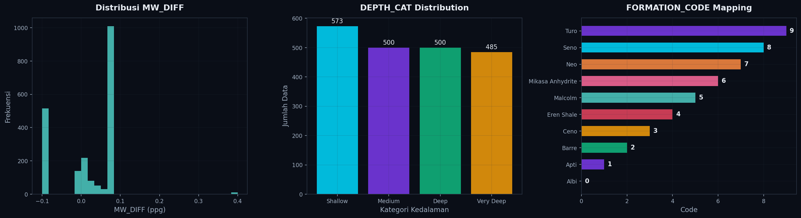
• MW_DIFF = MW OUT − MW IN: Selisih densitas lumpur, mengindikasikan kontaminasi formasi.
• DEPTH_CAT: Kategorisasi kedalaman (Shallow/Medium/Deep/Very Deep) → di-encode menjadi ordinal 0–3.
• FORMATION_CODE: Kode numerik untuk jenis formasi batuan (0–9), sudah dibuat di Praktikum 01.
📊 2.4 Distribusi Target
# Distribusi target ROP fig, axes = plt.subplots(1, 2, figsize=(14, 5)) axes[0].hist(df[target_col], bins=40, color='#00d9ff', alpha=0.85) axes[0].axvline(df[target_col].mean(), color='red', ls='--', label=f'Mean: {df[target_col].mean():.1f}') axes[0].legend() # Boxplot per formasi df.boxplot(column=target_col, by='Formation', ax=axes[1]) plt.tight_layout(); plt.show()
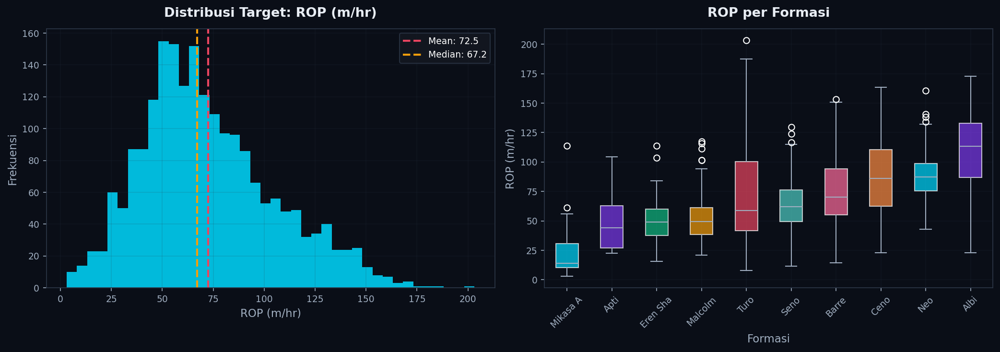
⚖️ 2.5 Feature Scaling
Feature scaling menyamakan skala antar fitur. Tanpa scaling, fitur bernilai besar (SPP: ribuan, TQ: ribuan) akan mendominasi model linear. Kita gunakan StandardScaler (mean=0, std=1). Catatan: scaling diterapkan setelah train-test split untuk mencegah data leakage.
# Demo: Before vs After Scaling scaler_demo = StandardScaler() X_demo = pd.DataFrame(scaler_demo.fit_transform(X), columns=X.columns) fig, axes = plt.subplots(1, 2, figsize=(14, 5)) show = ['WOB (ton)', 'FR (gpm)', 'SPP (psi)', 'RPM (rpm)', 'TVD (m)', 'TQ (lb.ft)'] X[show].boxplot(ax=axes[0]); axes[0].set_title('Sebelum Scaling') X_demo[show].boxplot(ax=axes[1]); axes[1].set_title('Setelah StandardScaler') plt.tight_layout(); plt.show()
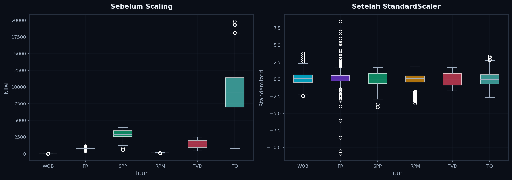
• Wajib: Linear Regression, SVM, KNN, Neural Network (model sensitif terhadap skala).
• Tidak perlu: Decision Tree, Random Forest (model berbasis aturan split, bukan jarak).
Train-Test Split
Data dibagi 80:20 — 80% untuk training, 20% untuk testing. Scaling dilakukan setelah split: fit_transform pada train, transform saja pada test.
# Train-Test Split (80:20) X_train, X_test, y_train, y_test = train_test_split( X, y, test_size=0.2, random_state=42 ) # Scaling SETELAH split (mencegah data leakage!) scaler = StandardScaler() X_train_scaled = pd.DataFrame( scaler.fit_transform(X_train), columns=X_train.columns, index=X_train.index ) X_test_scaled = pd.DataFrame( scaler.transform(X_test), # transform saja, BUKAN fit_transform! columns=X_test.columns, index=X_test.index ) print(f"📊 Train set: {X_train.shape[0]:,} data ({X_train.shape[0]/len(X)*100:.0f}%)") print(f"📊 Test set: {X_test.shape[0]:,} data ({X_test.shape[0]/len(X)*100:.0f}%)") print(f"✅ Scaling selesai (fit pada train, transform pada test)")
📊 Train set: 1,646 data (80%) 📊 Test set: 412 data (20%) ✅ Scaling selesai (fit pada train, transform pada test)
# Visualisasi proporsi dan distribusi fig, axes = plt.subplots(1, 2, figsize=(14, 5)) axes[0].pie([len(X_train), len(X_test)], labels=['Train', 'Test'], autopct='%1.0f%%') axes[1].hist(y_train, alpha=0.7, label='Train') axes[1].hist(y_test, alpha=0.7, label='Test') axes[1].legend() plt.show()
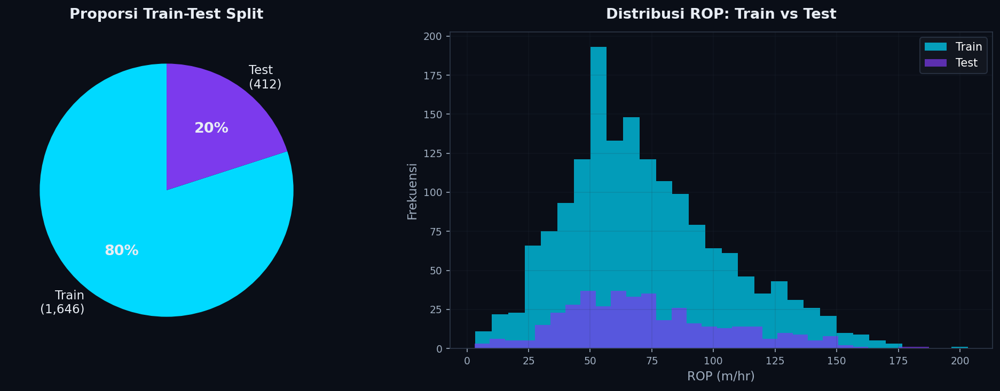
scaler.fit_transform() hanya pada data train. Data test hanya scaler.transform(). Statistik scaling (mean, std) hanya berasal dari train — simulasi evaluasi benar-benar pada data "baru" yang belum pernah dilihat model.
Model 1: Linear Regression
Linear Regression mencari hubungan linear: ŷ = β₀ + β₁x₁ + β₂x₂ + ... + βₙxₙ. Model ini meminimalkan sum of squared errors (OLS). Menggunakan data yang sudah di-scale.
# Training Linear Regression (data SCALED) lr = LinearRegression() lr.fit(X_train_scaled, y_train) y_pred_lr = lr.predict(X_test_scaled) print("📊 Linear Regression — Hasil Evaluasi:") print(f" MAE = {mean_absolute_error(y_test, y_pred_lr):.4f} m/hr") print(f" RMSE = {np.sqrt(mean_squared_error(y_test, y_pred_lr)):.4f} m/hr") print(f" R² = {r2_score(y_test, y_pred_lr):.4f}")
📊 Linear Regression — Hasil Evaluasi: MAE = 18.7175 m/hr RMSE = 29.3290 m/hr R² = 0.2112
# Predicted vs Actual + Residual Plot fig, axes = plt.subplots(1, 2, figsize=(14, 6)) axes[0].scatter(y_test, y_pred_lr, alpha=0.5, s=15) axes[0].plot([y_test.min(), y_test.max()], [y_test.min(), y_test.max()], 'r--') residuals = y_test - y_pred_lr axes[1].scatter(y_pred_lr, residuals, alpha=0.5, s=15) axes[1].axhline(0, color='red', ls='--') plt.tight_layout(); plt.show()
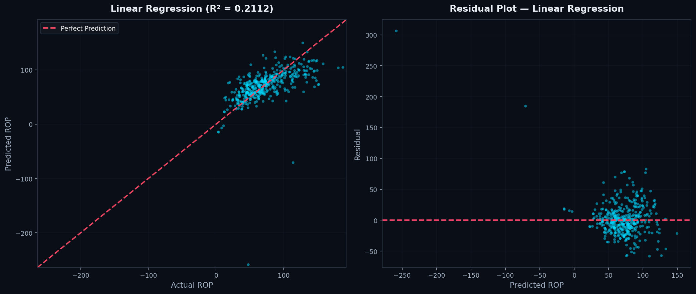
# Koefisien model coef_df = pd.DataFrame({ 'Feature': feature_cols, 'Coefficient': lr.coef_ }).sort_values('Coefficient') print(f"Intercept: {lr.intercept_:.4f}") print(coef_df.to_string(index=False)) coef_df.plot.barh(x='Feature', y='Coefficient'); plt.show()
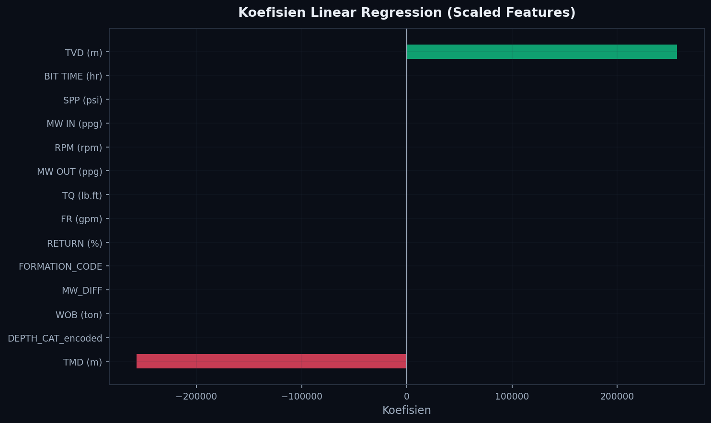
R² = 0.2112 — Linear Regression hanya menjelaskan ~21% variasi ROP. Ini mengindikasikan bahwa hubungan antara parameter drilling dan ROP bersifat non-linear. Koefisien BIT TIME dan SPP positif besar, sementara WOB dan MW_DIFF berkoefisien negatif. Perhatikan juga bahwa TMD dan TVD memiliki koefisien sangat besar (berlawanan arah) karena keduanya sangat berkorelasi — ini menunjukkan masalah multicollinearity.
Model 2: Decision Tree Regressor
Decision Tree mempartisi data secara rekursif berdasarkan aturan if-else. Mampu menangkap hubungan non-linear tanpa perlu scaling. Parameter max_depth=8 membatasi kedalaman tree.
# Training Decision Tree (tanpa scaling!) dt = DecisionTreeRegressor(max_depth=8, random_state=42) dt.fit(X_train, y_train) y_pred_dt = dt.predict(X_test) print("🌳 Decision Tree — Hasil Evaluasi:") print(f" MAE = {mean_absolute_error(y_test, y_pred_dt):.4f} m/hr") print(f" RMSE = {np.sqrt(mean_squared_error(y_test, y_pred_dt)):.4f} m/hr") print(f" R² = {r2_score(y_test, y_pred_dt):.4f}")
🌳 Decision Tree — Hasil Evaluasi: MAE = 14.0066 m/hr RMSE = 20.0478 m/hr R² = 0.6315
# Visualisasi Decision Tree (max_depth=3 agar terbaca) dt_viz = DecisionTreeRegressor(max_depth=3, random_state=42) dt_viz.fit(X_train, y_train) fig, ax = plt.subplots(figsize=(26, 12)) plot_tree(dt_viz, feature_names=feature_cols, filled=True, rounded=True, ax=ax, fontsize=8) plt.show()
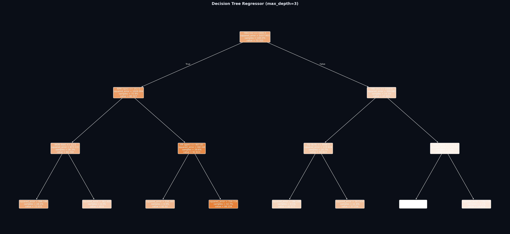
# Predicted vs Actual + Residual fig, axes = plt.subplots(1, 2, figsize=(14, 6)) axes[0].scatter(y_test, y_pred_dt, alpha=0.5, s=15, color='#7c3aed') axes[0].plot([y_test.min(), y_test.max()], [y_test.min(), y_test.max()], 'r--') residuals_dt = y_test - y_pred_dt axes[1].scatter(y_pred_dt, residuals_dt, alpha=0.5, s=15, color='#7c3aed') axes[1].axhline(0, color='red', ls='--') plt.tight_layout(); plt.show()
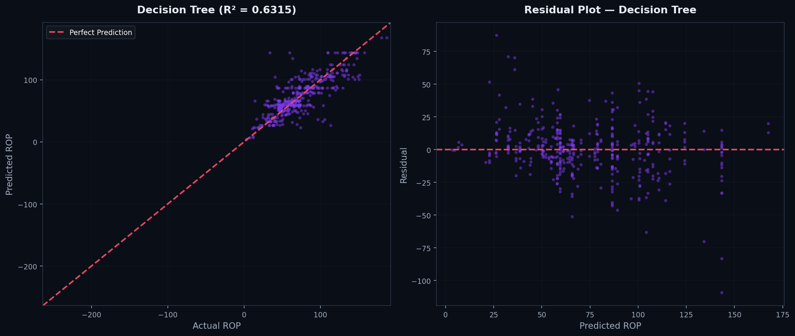
R² = 0.6315 — peningkatan drastis +42% dibanding Linear Regression. Decision Tree mampu menangkap hubungan non-linear yang tidak bisa ditangkap model linear. Dari visualisasi tree, split pertama terjadi pada parameter kedalaman — mengkonfirmasi peran dominan kedalaman terhadap ROP.
Model 3: Random Forest Regressor
Random Forest adalah metode ensemble: membangun 100 Decision Tree independen pada subset data/fitur yang berbeda, lalu merata-ratakan prediksinya. Ini mengurangi overfitting dan meningkatkan generalisasi.
# Training Random Forest rf = RandomForestRegressor( n_estimators=100, # 100 trees max_depth=12, # Kedalaman per tree random_state=42, n_jobs=-1 # Semua CPU core ) rf.fit(X_train, y_train) y_pred_rf = rf.predict(X_test) print("🌲 Random Forest — Hasil Evaluasi:") print(f" MAE = {mean_absolute_error(y_test, y_pred_rf):.4f} m/hr") print(f" RMSE = {np.sqrt(mean_squared_error(y_test, y_pred_rf)):.4f} m/hr") print(f" R² = {r2_score(y_test, y_pred_rf):.4f}")
🌲 Random Forest — Hasil Evaluasi: MAE = 11.4241 m/hr RMSE = 16.4361 m/hr R² = 0.7523
# Predicted vs Actual + Residual fig, axes = plt.subplots(1, 2, figsize=(14, 6)) axes[0].scatter(y_test, y_pred_rf, alpha=0.5, s=15, color='#10b981') axes[0].plot([y_test.min(), y_test.max()], [y_test.min(), y_test.max()], 'r--') plt.tight_layout(); plt.show()
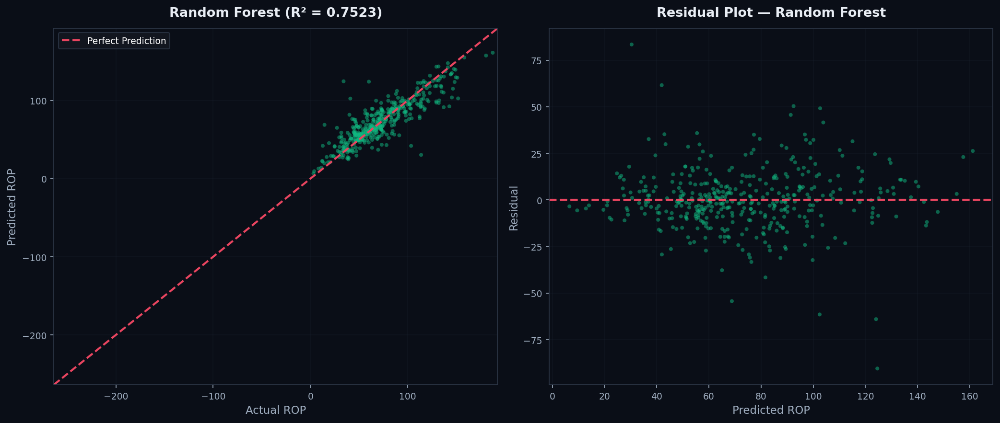
🔑 6.1 Feature Importance
# Feature Importance imp_df = pd.DataFrame({ 'Feature': feature_cols, 'Importance': rf.feature_importances_ }).sort_values('Importance', ascending=False) print("🔑 Feature Importance (Random Forest):") for _, row in imp_df.iterrows(): bar = '█' * int(row['Importance'] * 50) print(f" {row['Feature']:22s} {row['Importance']:.4f} {bar}") imp_df.plot.barh(x='Feature', y='Importance'); plt.show()
🔑 Feature Importance (Random Forest): TMD (m) 0.1418 ███████ RPM (rpm) 0.1410 ███████ TVD (m) 0.1298 ██████ BIT TIME (hr) 0.1062 █████ TQ (lb.ft) 0.1059 █████ FR (gpm) 0.0994 ████ WOB (ton) 0.0926 ████ FORMATION_CODE 0.0507 ██ SPP (psi) 0.0477 ██ RETURN (%) 0.0406 ██ MW_DIFF 0.0377 █ MW OUT (ppg) 0.0055 MW IN (ppg) 0.0006 DEPTH_CAT_encoded 0.0005
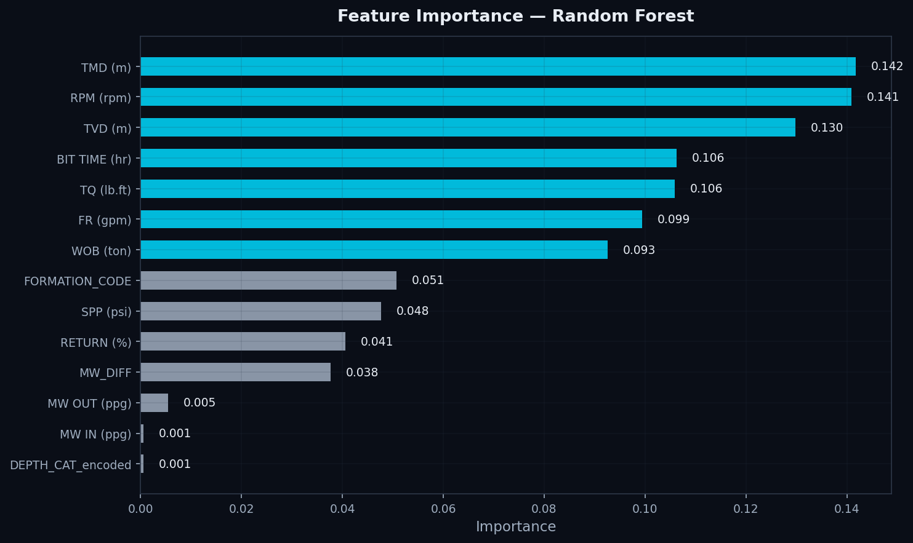
TMD/TVD (kedalaman) mendominasi ~27% total importance — formasi semakin keras di kedalaman, langsung memengaruhi kecepatan drilling. RPM (14.1%) adalah parameter operasional paling berpengaruh — driller bisa langsung mengatur ini. BIT TIME (10.6%) dan TQ (10.6%) juga signifikan — waktu pemakaian bit dan torsi mengindikasikan keausan bit. Fitur engineering FORMATION_CODE (5.1%) berkontribusi lebih besar dari SPP, membuktikan bahwa feature engineering di Praktikum 01 bermanfaat. MW IN/OUT dan DEPTH_CAT_encoded hampir tidak berkontribusi — informasinya sudah tercakup oleh TVD dan fitur lain.
Perbandingan Model
# Tabel perbandingan results = pd.DataFrame({ 'Model': ['Linear Regression', 'Decision Tree', 'Random Forest'], 'MAE': [18.72, 14.01, 11.42], 'RMSE': [29.33, 20.05, 16.44], 'R²': [0.2112, 0.6315, 0.7523] }) print(results.to_string(index=False))
| Model | MAE (m/hr) | RMSE (m/hr) | R² |
|---|---|---|---|
| Linear Regression | 18.72 | 29.33 | 0.2112 |
| Decision Tree | 14.01 | 20.05 | 0.6315 |
| Random Forest | 11.42 | 16.44 | 0.7523 |
# Bar chart perbandingan R² dan RMSE fig, axes = plt.subplots(1, 2, figsize=(14, 5)) models = ['Linear Reg.', 'Decision Tree', 'Random Forest'] axes[0].bar(models, results['R²']) axes[1].bar(models, results['RMSE']) plt.show()
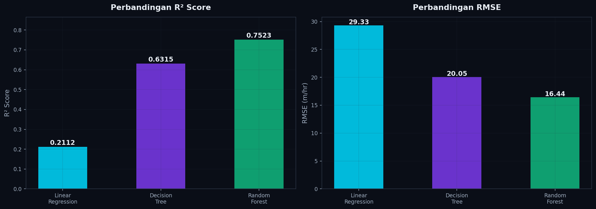
• MAE: Rata-rata selisih absolut prediksi vs aktual. Satuan sama dengan target (m/hr). Makin kecil makin baik.
• RMSE: Seperti MAE tapi lebih sensitif terhadap error besar. Makin kecil makin baik.
• R²: Proporsi variasi target yang dijelaskan model. Range 0–1, makin dekat ke 1 makin baik.
Visualisasi Diagnostik
📈 8.1 Predicted vs Actual — Semua Model
# Perbandingan Predicted vs Actual (3 model) fig, axes = plt.subplots(1, 3, figsize=(18, 5.5)) for ax, y_pred, name, color in zip(axes, [y_pred_lr, y_pred_dt, y_pred_rf], ['Linear Regression', 'Decision Tree', 'Random Forest'], ['#00d9ff', '#7c3aed', '#10b981']): ax.scatter(y_test, y_pred, alpha=0.4, s=12, color=color) ax.plot([y_test.min(), y_test.max()], [y_test.min(), y_test.max()], 'r--') ax.set_title(name); ax.set_aspect('equal') plt.tight_layout(); plt.show()
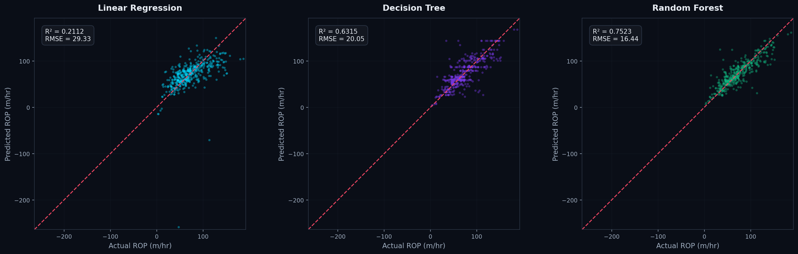
📊 8.2 Distribusi Residual
Residual yang baik seharusnya berdistribusi normal dan berpusat di nol.
# Distribusi residual ketiga model fig, axes = plt.subplots(1, 3, figsize=(16, 5)) for ax, res, name in zip(axes, [y_test-y_pred_lr, y_test-y_pred_dt, y_test-y_pred_rf], ['Linear Regression', 'Decision Tree', 'Random Forest']): ax.hist(res, bins=30) ax.axvline(0, color='red', ls='--') plt.tight_layout(); plt.show()
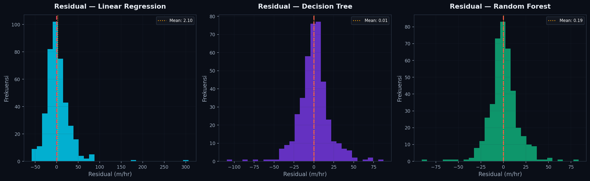
• Linear Regression: Residual tersebar sangat luas — model gagal menangkap pola non-linear.
• Decision Tree: Distribusi lebih sempit, tapi ada pola "step" karena prediksi diskrit dari leaf nodes.
• Random Forest: Distribusi paling sempit dan simetris di nol — prediksi paling konsisten dan tidak bias.
Insight & Kesimpulan
1. Performa Model
Random Forest menjadi model terbaik (R² = 0.7523, RMSE = 16.44 m/hr), diikuti Decision Tree (R² = 0.6315), dan Linear Regression (R² = 0.2112). Hubungan parameter drilling vs ROP bersifat non-linear.
2. Faktor Dominan terhadap ROP
• TMD/TVD (kedalaman) ~27%: Formasi semakin keras di kedalaman.
• RPM 14.1%: Parameter operasional paling berpengaruh, bisa dikontrol langsung.
• BIT TIME & TQ ~10.5%: Menandakan kondisi/keausan bit drilling.
• FORMATION_CODE 5.1%: Feature engineering dari Praktikum 01 terbukti berguna.
3. Implikasi Operasional
Model Random Forest bisa digunakan untuk real-time ROP prediction, membantu driller mengoptimalkan RPM, FR, dan WOB berdasarkan kedalaman dan kondisi formasi.
4. Potensi Improvement
• Hyperparameter tuning (GridSearchCV/RandomizedSearchCV)
• Menghapus fitur redundan (TMD ≈ TVD, MW_DIFF ≈ MW OUT − MW IN)
• Model lanjutan: Gradient Boosting (XGBoost, LightGBM)
• Cross-validation (k-fold) untuk evaluasi lebih robust
# Simpan model terbaik import joblib joblib.dump(rf, 'best_model_rf.pkl') joblib.dump(scaler, 'scaler.pkl') joblib.dump(oe, 'ordinal_encoder.pkl') print("✅ Model, scaler, dan encoder berhasil disimpan!")
✅ Model, scaler, dan encoder berhasil disimpan! 📁 best_model_rf.pkl 📁 scaler.pkl 📁 ordinal_encoder.pkl
Latihan Mandiri
- Ganti Target Variabel
Gunakan TQ (lb.ft) sebagai target prediksi. Latih ketiga model dan bandingkan hasilnya. Apakah ranking model berubah? - Eksperimen Feature Selection
Latih Random Forest hanya dengan 5 fitur teratas (TMD, RPM, TVD, BIT TIME, TQ). Bandingkan R² dengan model 14 fitur. Berapa informasi yang hilang? - Hyperparameter Tuning
Ubah parametern_estimatorsRF menjadi [10, 50, 100, 200, 500]. Plot R² vs n_estimators. Di mana titik diminishing returns? - Analisis Multicollinearity
TMD dan TVD sangat berkorelasi. Coba drop salah satu, lalu latih ulang ketiga model. Apakah performa berubah signifikan? - Prediksi per Formasi
Hitung RMSE per formasi untuk Random Forest. Formasi mana yang paling mudah dan paling sulit diprediksi? Jelaskan berdasarkan karakteristik data.
Kerjakan soal latihan dalam format laporan yang sudah diberikan. Sertakan kode, output, dan interpretasi untuk setiap soal. Submit melalui e-learning sebelum pertemuan berikutnya.